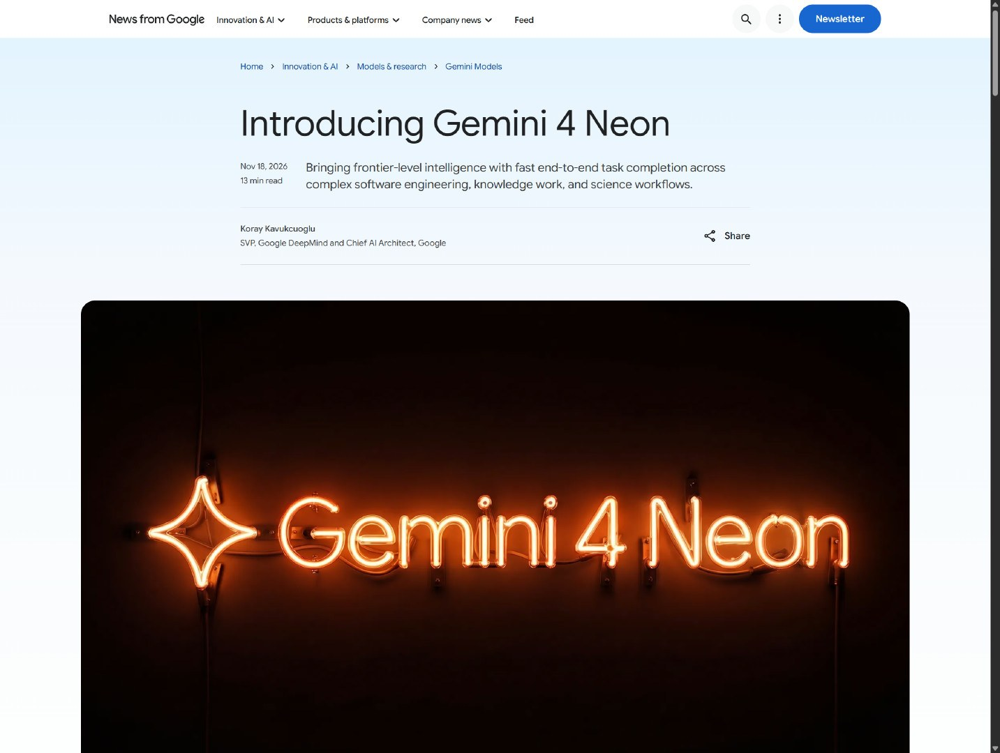
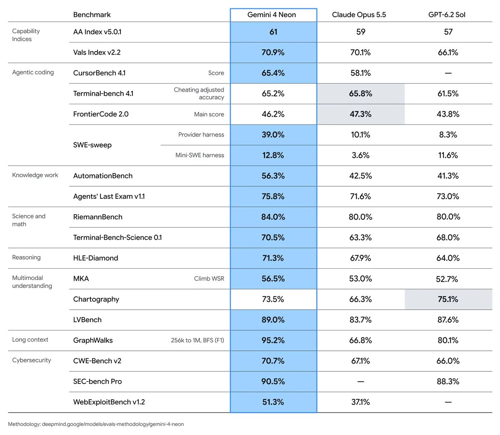
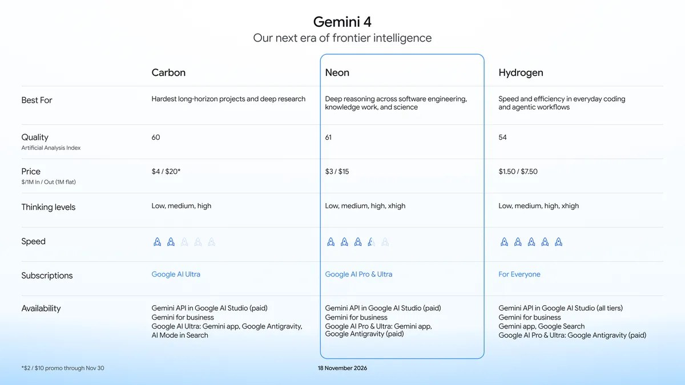

TOKENTA SIGNAL · ISSUE 269
GEMINI 4 × NEON · 2026-11-18
第四个元素，坐的是调度席。氖是第 10 号元素，霓虹灯里最亮的那一格，谷歌把家族的第四个模型命名给了它。
谷歌这次的卖点在分工。Neon 的定价与基准都指向同一个位置，由它当主代理拆任务、派活、验收，便宜的 Hydrogen 铺在下面跑量。前沿模型的竞争，正在从谁更聪明，变成谁的班子更能干活。
THE RELEASE
五周，四个元素
10 月 13 日 Argon 打头，11 月 10 日 Carbon，11 月 12 日 Hydrogen，11 月 18 日 Neon 到位。Gemini 4 家族五周发了四个模型，名字全取自元素周期表，AI Studio 里的模型选择器索性做成一张元素周期表。分工在发布时就写明了，Carbon 啃最难的长程项目，Hydrogen 管日常快速执行，Neon 补上中间的高频复杂活。
Neon 的参数表很克制。每百万 token 输入 $3，缓存输入 $0.15，输出 $15，上下文 1M token，四档思考等级。没有免费层，API 只开付费档，Pro 与 Ultra 订阅用户在 Gemini App 与 Antigravity 里直接可用。官方模型卡显示，它由 Carbon 一线改造而来，知识截止 2026 年 3 月。

谷歌官方博客 11 月 18 日发布页，Introducing Gemini 4 Neon。
THE ORCHESTRATOR
主代理的活，它干得最顺手
谷歌在官方博客里给 Neon 的定位写得很直白。它可以独立跑长任务，也可以当 Orchestrator，在 Antigravity 里指挥并行的 Hydrogen 子代理。配套的工程细节是少重复读文件，干活时主动汇报进度，长会话里上下文压缩保持稳定。
官方演示里，一组 Neon 代理把一张图拆进 100,000 个单元格的电子表格，用 500,000+ 条实时公式做边缘检测、深度计算与重新打光，全程不嵌图，不写脚本。提前一天拿到模型的测试者 Chubby 在 Antigravity 里跑出 17 个交互演示，xhigh 档 13 个会话共触发 762 次工具调用。三个带 bug 的程序经它修复后测试全过，代码审查里埋的 4 个 bug 全部找出，它还额外指出闰秒校验与文件夹替换两个边界漏洞。
THE SCORECARD
对比表里，只输了三项
谷歌的官方对比表把 Neon 与 Claude Opus 5.5、GPT-6.2 Sol 摆在一起，19 项里 Neon 输了 3 项。Terminal-Bench 4.1 以 65.2 对 65.8 落后 Opus，FrontierCode 以 46.2 对 47.3 落后，Chartography 以 73.5 对 75.1 落后 Sol。其余项目大多领先，SWE-sweep 在自家 Antigravity 框架下拿到 39.0%，是对手最高分的近四倍。换到中立的 mini-SWE 框架，优势缩到 12.8% 对 11.6。同一个模型换一副框架，分数能差出三倍，这张表最值得看的就是这一行。

谷歌官方基准对比表，Gemini 4 Neon 对 Claude Opus 5.5 与 GPT-6.2 Sol。
编程之外的落点同样清楚。Vending-Bench 2 模拟长期经营企业，Neon 以 $16,843 排第一，AA 编程代理指数以 58.6 排第一。Cursor 在接入当天公布默认档实测，CursorBench 4.1 得 63.7%，平均每个任务 $6.54，落在性价比前沿上。网络安全是单独一条线，Neon for cyber 在 SEC-bench Pro 拿到 90.5%，在 WebExploitBench 拿到 51.3%，接下来几天通过 Fairwind 计划向受信任的防御方开放。

Gemini 4 家族定位图，Neon 质量指数 61 分居首，价格站在中间档。
ALSO TODAY
插播一条，Anthropic 定价 83 美元
同一天，Anthropic 把首次公开募股的发行价定在每股 $83，高于此前 70 至 78 美元的发行区间，发行规模扩大到 9.8 亿股，募资约 813 亿美元，创下 IPO 纪录。股票 11 月 19 日在纳斯达克挂牌，代码 ANT。本号昨天写过的亚马逊与谷歌持股结构没有变，变的只有价格，市场给的比公司开口要的更高。
THE JUDGMENT
卖的是班子，不是单兵
Tokenta Signal判断：Neon 的参数不惊艳，位置选得准。谷歌把四档模型按岗位摆开，调度席单独成军，前沿竞争从比谁的模型更聪明，转向比谁的代理班子更能把长任务跑完。接下来要看的是 Antigravity 里这套分工能不能跑出真实留存，演示视频不算数。
KEY POINTS · 要点速览
01 五周集齐四个元素，Argon、Carbon、Hydrogen、Neon 按岗位排开。
02 12 月 1 日促销价到期后，Neon 的 token 价比 Carbon 便宜四分之一。
03 Neon 在 Antigravity 里当主代理，拆任务，派子代理并行执行，回收结果。
04 安全版 Neon for cyber 走 Fairwind 计划，只给受信任的防御方。
05 账的算法变了，从比 token 单价，到比一个任务跑完的总成本，谷歌口径是低 32%。
本篇基准分数以谷歌官方公布与 Artificial Analysis、Cursor 等第三方实测为准，各家测试框架不同，分数不可直接横比。文末 Anthropic 发行价为已公布的发行条款，不构成任何投资建议。
来源 · Google 官方博客 · blog.google · 2026-11-18 查看原文 ↗
REFERENCES · 参考来源
[1] Google: Introducing Gemini 4 Neon https://blog.google/innovation-and-ai/models-and-research/gemini-models/introducing-gemini-4-neon/
[2] Google DeepMind: Gemini 4 Neon Model Evaluation https://deepmind.google/models/evals-methodology/gemini-4-neon
[3] PYMNTS: Anthropic Sets Record With $81.3 Billion Share Sale Before Nasdaq Debut https://www.pymnts.com/news/artificial-intelligence/2026/anthropic-sets-record-with-81-3-billion-share-sale-before-nasdaq-debut/
TOKENTA SIGNAL
Extracting signals from the noise. 每日信号来自公开信息与一手来源，判断与事实分开标注。